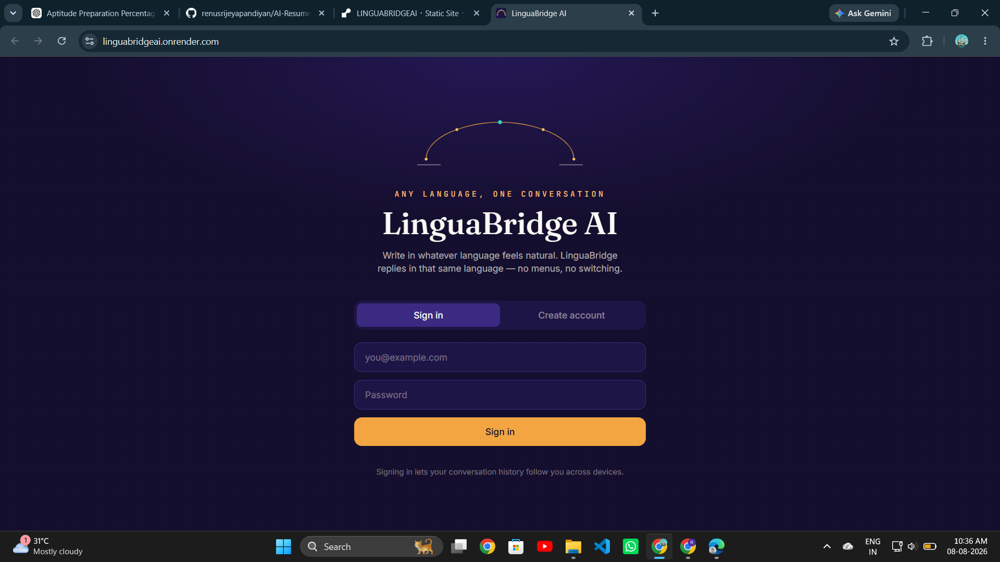
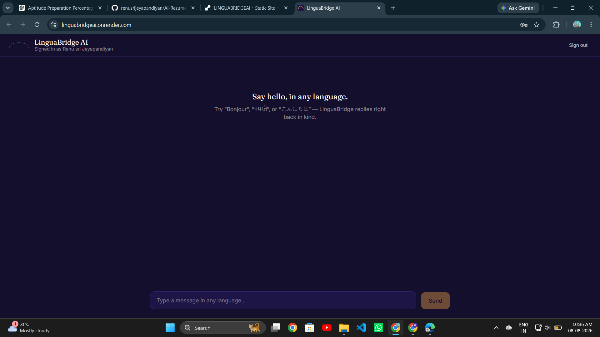
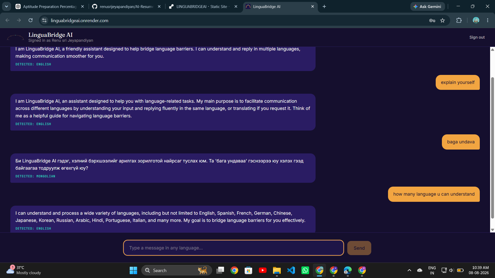

A multilingual chat assistant — write in whatever language feels natural, and LinguaBridge detects it and replies in kind, no manual language switching required.
⏳ Hosted on Render's free tier — the first load after inactivity can take 30–60 seconds to spin up.



Most chat assistants force a single working language or require manually switching a settings toggle. LinguaBridge removes that friction entirely — the model figures out what language you're writing in and just responds in kind.
Built the full stack solo — the React/Vite front-end, the Express/Node.js API, MongoDB for user accounts and conversation history, JWT + bcrypt authentication, and the Gemini API integration that handles both language detection and generating the in-language reply.
Getting reliable language detection for short, informal messages (a single word or slang phrase) was trickier than expected — the model sometimes needed conversational context, not just the latest message, to detect correctly. I ended up passing recent chat history into the detection step, which noticeably improved accuracy on short inputs.